MalwareTech Windows Reversing Challenge #4 Write-Ups
[ Shellcode ]
Position independent code (AKA Shellcode) is assembly code which can simply be copied to a memory location and run. Due to the lack of need for complex loading & initialization, it is popular for many tasks such as code injection. These challenges are designed to test your ability to reverse engineer malware shellcode.
Shellcode1
Hello friend, in this challenge we are given a PE file named shellcode1.exe_ .
Description of this challenge:
shellcode1.exe contains a flag stored within the executable. When run, the program will output an MD5 hash of the flag but not the original. Can you extract the flag?
Rules & Information:
- You are not require to run shellcode1.exe, this challenge is static analysis only.
- Do not use a debugger or dumper to retrieve the decrypted flag from memory, this is cheating.
- Analysis can be done using the free version of IDA Pro (you don’t need the debugger).
detect it easy result:
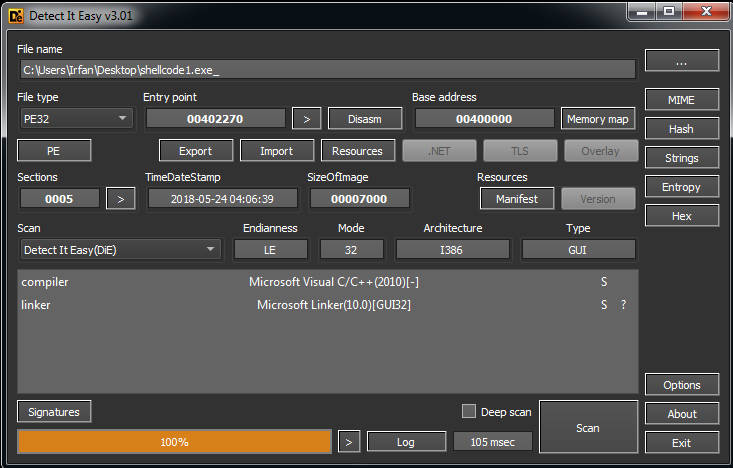
Ghidra decompilation result of entrypoint function:
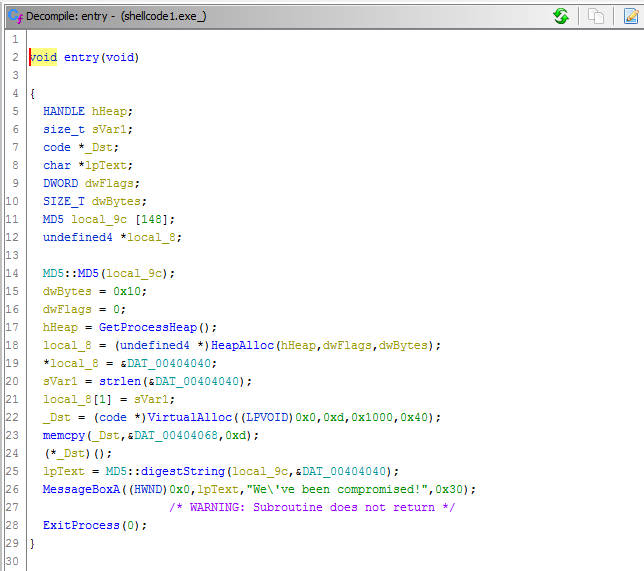
Here we get some interesting points:
- Suspicious data ==> DAT_00404040
- VirtualAlloc() with its memory protection set to 0x40(PAGE_EXECUTE_READWRITE), then DAT_00404068 is copied to that allocated memory, and executed ==> shellcode execution pattern
Let’s analyze DAT_00404040 first:
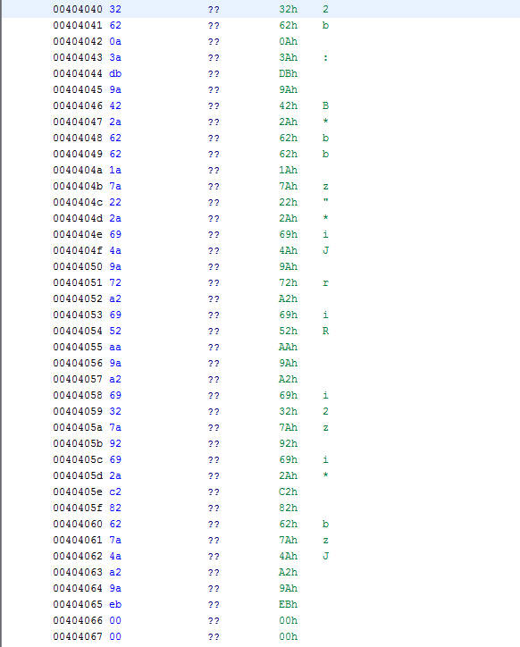
It looks like this data is encrypted, so there is nothing we can get from this data, just skip it for now.
Let’s analyze DAT_00404068:
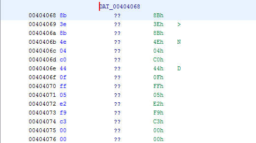
From the pattern of how DAT_00404068 will be processed and used by the program, we can conclude that this is a shellcode. So we can try to disassemble it:
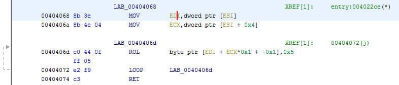
Simply put, this shellcode takes one parameter and processes it by performing bitwise operation ROL byte by byte.
First question is:
- what kind of data is taken as the parameter?
The parameter is stored in the ESI register, so let’s trace it!
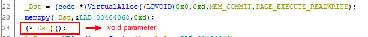
Here Ghidra decompiler defines the called shellcode takes no parameters, this is because Ghidra recognizes this program as an x86 PE, and x86 calling conventions store parameters in stack memory, whereas we already know this shellcode uses ESI registers to store its parameters(similar to x64 calling conventions that use registers to store parameters).
So now we have to see the assembly code in Ghidra disassembler:
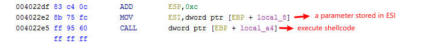
We can see that ESI initialized with value in local_8, and the next question is:
- what kind of data is stored in local_8?
Back to Ghidra decompiler:
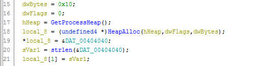
local_8 stores the address of allocated heap memory, and this allocated heap memory stores a pointer to DAT_00404040 and the length of DAT_00404040.
DAT_00404040 is encrypted data and DAT_00404068 is shellcode that will process it, so it looks like this shellcode is the decryptor function for the encrypted data(DAT_00404040).
Let’s try to confirm it by writing a Ghidra script that emulates the decryptor function
from ghidra.program.model.address import AddressSet
rol = lambda val, r_bits, max_bits: \
(val << r_bits%max_bits) & (2**max_bits-1) | \
((val & (2**max_bits-1)) >> (max_bits-(r_bits%max_bits)))
def run():
memory = currentProgram.getMemory()
if currentSelection is None or currentSelection.isEmpty():
print "Use your mouse to highlight some data to ROL"
return
addr_itter = currentSelection.getAddresses(True)
for addr in addr_itter:
setByte(addr, rol(getByte(addr), 5, 8))
run()
Highlight the encrypted data, run the script, and here is the result:
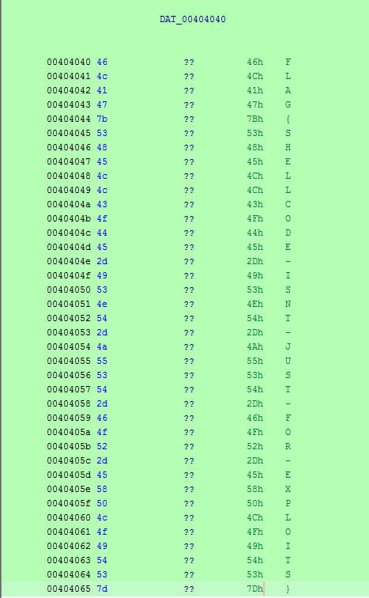
Now let’s change the data type to string:
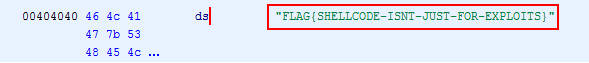
We’ve got a very interesting string here, let’s try to check whether this “FLAG{SHELLCODE-ISNT-JUST-FOR-EXPLOITS}” is the FLAG or not before continuing the analysis
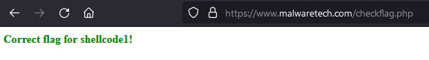
Yeeepp, that string is the FLAG.
Challenge source: https://www.malwaretech.com/challenges/windows-reversing/shellcode1